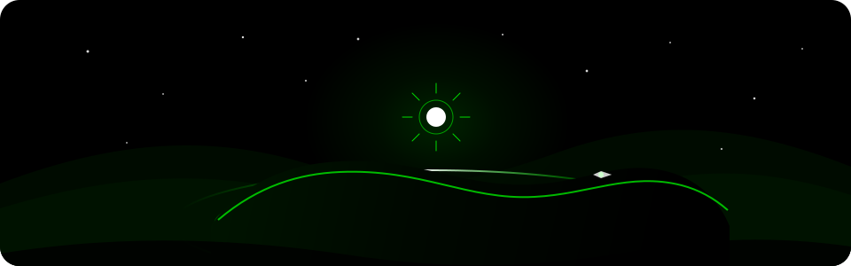

MIAPLACIDUS
Orbital geometry and a deep-space instrument palette give the remake a calm, readable control-room feel. Use bright cyan for primary actions, blue for navigation, green for success, and amber/red for warnings and failure. Keep the star field quiet so resource values and decisions stay in front.
Startup scene
Original orbital-horizon illustration for the save/start screen. Keep it quiet and cropped around the luminous world so the pioneer identity and start controls remain the main focus.

Core tokens
Hierarchy and controls
One clear decision per card.
Use sentence case for actions and labels; reserve tracked uppercase for short
status eyebrows.
Original asset families
- Orbital title emblem and startup scene
- 14 resource and compound emblems
- Technology and building emblems
- 9 celestial illustration kinds
- ID-based achievement badges
- 4 endgame story scenes
These newly authored vector and CSS treatments carry the same cyan, blue, and muted surface language into resources, space operations, achievements, and the ending. The asset manifest records their variants and usage.
Nine themes
Theme variation changes surface, line, ink and accent tokens. Keep layout and status meanings stable across all nine choices.
Type and motion
Light / Galaxy — Inter → system sans
Readable UI text and tabular balance figures.
Frosty — Trebuchet MS
A softer, open sans-serif voice.
Misty / Summer — Georgia
A warm, editorial serif voice.
Terminal — Consolas → Cascadia Mono
Dense console text with a clear monospace rhythm.
Space — system monospace
A quieter technical display voice.
Use geometric orbital marks as accents; avoid busy illustration behind controls. Dark and Supernova use the Arial system sans stack. Keep the type hierarchy and status meanings clear in every theme.
Prefer short fades and restrained progress movement. Honor
prefers-reduced-motion and the in-game reduced-motion setting.